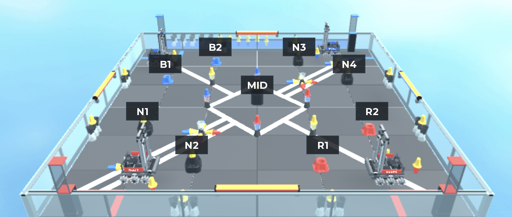

Our field language
| Area | Goals | Control |
|---|---|---|
| Left | R1 + N2 | Left / T-W |
| Down | R2 + N4 | Down / T-S |
| Top | N1 + B1 | Top / T-N |
| Right | B2 + N3 | Right / T-E |
| MID | MID | Robot majority at the finish |
Goal names are our discussion labels. An alliance goal and a nearby neutral goal share yellow ownership, but they do not share removal permissions.
Rules that change our decisions
Visible red/blue pin halves score 5 each; owned yellow halves score 10. A cup can hide a half. Auto adds 12 to the winner, or 6 each for a tie. Each robot ending in MID adds 8. MID yellow ownership follows robot majority; a tie gives neither alliance those yellows. Scoring reference: SC3–SC7.
A touched or incompletely seated toggle is neutral. Guard its approach without resting on it. SC4.
N2 and N4 are neutral goals: their placed objects cannot be removed. Our knockdown fallback is limited to our alliance goals R1/R2, subject to the rest of the rules. SG9–SG10.
No new objects may be placed on MID in the final ten seconds. SG12.
How to read these documents
“Agreed direction” records our conversation. Green proposal boxes identify additions from this analysis. Diagrams show routes and responsibility, not proven pushing outcomes. Counts are visible halves, not whole pins. The lead calculator keeps its table, diagram and score tied to the same inputs.